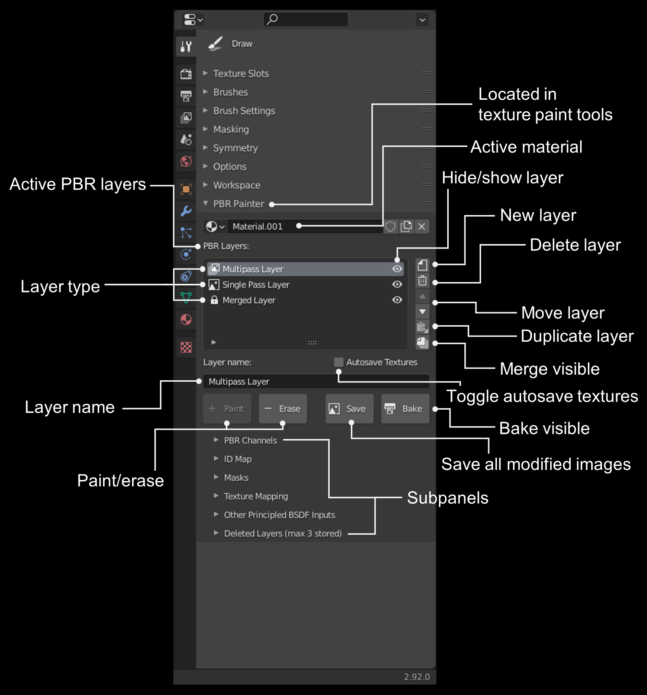

Understanding the Main UI Panel
The UI without Layers
When there are no currently active PBR Layers on the material, the UI will look like this and you will be prompted to add a new layer to get started:
You can click the "Add Layer" button to add a new layer:

Adding a new layer generates the following dialog box:
Here, you can select the layer type, either Multipass or Single Pass:
Briefly, multipass layers are used to paint any combination of PBR texture channels simultaneously, whereas for single pass you can paint each channel separately, which may be necessary in some situations (more on this later).
If you select multipass (which you will use most frequently), you need to select the resolution and of the new layer. This is the resolution of the mask you will be painting that will be used to perform the multipass PBR painting. You can also opt for 32 bit floating point depth, as opposed to 16 bit by default.
If you select single pass, nothing else needs to be specified, as you will specify these values separately for each PBR channel that you paint.
The following sections explain how the multipass and single pass layer types work, and how they differ from eachother. This will also become clearer as you read through the remaining documentation.
Multipass Layers
As mentioned, multipass layers provide almost all of the functionality of PBR Painter. With a multipass layer, you can paint any combination of PBR Channels - either using single values, imported texture maps and/or procedural textures - simultaneously onto your mesh, with a single brush stroke.
For multipass layers, you will be painting a single mask that will be used to generate all of the PBR channels you have selected. This process is what enables the multipass painting functionality. For example, you could simultaenously paint using an imported albedo texture, a constant roughness value of, for example, 0.2, and a procedural normal/bump texture. You can also opt to specify any other input to the Principled Shader to be included within the multipass setup. Again, this will become clearer later.
Single Pass Layers
For a single pass layer, you can paint any combination of albedo, metallic, roughness, normal, bump or height textures directly. The important distinction here is that the single pass layer lets you paint these PBR channels separately within a single layer, meaning that they can occupy different areas on the mesh, and they can be non-uniform values (e.g. you can paint variations in roughness directly, whereas for multipass layers the roughness is either a single value or a texture). These layers are therefore essentially the same as the internal texture paint system in Blender, although they have been adapted to be able to be included in PBR Painter's layered setup. One important application of single pass layers is painting over texture seams, which is demonstrated in the instructional video provided.
The UI with Layers
Once you've added one or more layers, you will see the complete UI for the addon. This is outlined below:

The following can be accessed in this main panel:
- Active material: The active material for the selected object.
- List of active layers: Shows all of the active PBR layers associated with the material, in order. That is, layers higher up on the list appear on top in the material.
- Layer type: The type of layer, either multipass, single pass or merged (more on this later).
- Layer name: The (modifiable) name of the currently selected layer, shown in the list.
- Paint/erase: Switch between painting and erasing the currently selected layer.
- Hide layer: Hide the currently selected layer.
- New layer: Add a new layer to the list. Note that the new layer will be added immediately above the currently selected layer.
- Delete layer: Delete the currently selected layer. Note that up to 10 layers are stored in the Deleted Layers panel (more on this later).
- Move layer: Move the currently selected layer up or down in the list.
- Duplicate later: Duplicate the currently selected layer.
- Merge visible: Merge all visible layers (more on this later).
- Toggle texture autosaving: Turn on/off autosaving of modified textures.
- Bake visible: Bake the visible material to textures (more on this later).
- Save images: Saves all modified masks to the .blend file. This is important to avoid any loss of work due to unexpected crashes etc.
In addition to these tools, there are also 6 subpanels which constitute the remainder of the addon: PBR Channels, ID Map, Masks, Texture Mapping, Other Principled BSDF Inputs, and Deleted Layers. The following sections in this documentation describe what is in these subpanels and their various functionalities/purposes. These sections will therefore be most useful as a reference while you are using the addon.